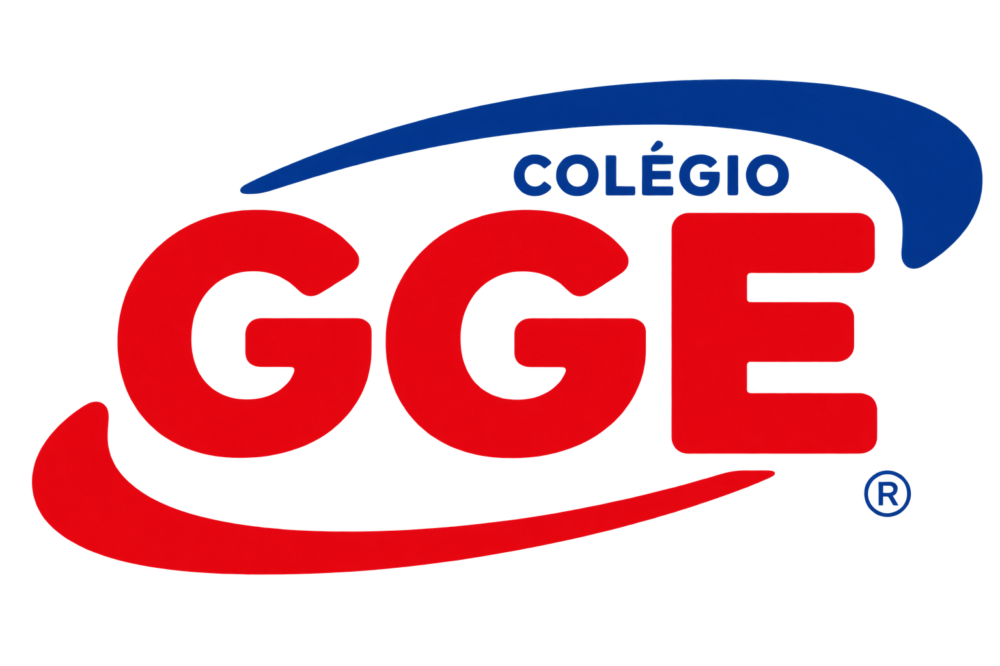

Compare a frequência cardíaca em repouso, imediatamente após o exercício e durante o primeiro minuto de recuperação.
Digite os três valores registrados pelo monitor de frequência cardíaca.
Frequência cardíaca registrada antes dos polichinelos.
batimentos por minutoValor registrado imediatamente após o esforço.
batimentos por minutoValor registrado após o primeiro minuto de recuperação.
batimentos por minuto